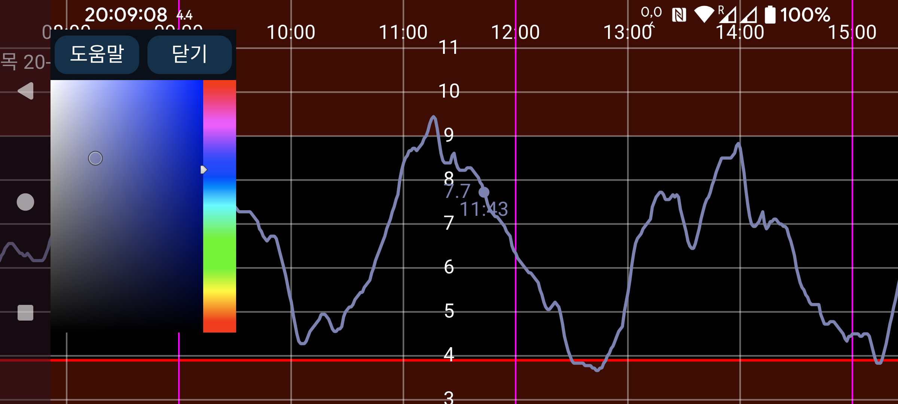

ar be de es fr hi it ja ko nl pl pt ru sv tr uk uz zh en
여기에서 입력값 숫자, 곡선 및 스캔 지점의 색상을 변경할 수 있습니다. 곡선의 한 지점, 스캔 또는 입력값을 눌러 해당 지점이나 입력값의 정보를 표시한 다음 색상 보기에서 색상을 누르십시오. 그러면 해당 곡선, 스캔 지점 또는 입력값이 그 색상으로 표시됩니다.
Wear OS 버전에서는 뒤로 가기 키가 있는 워치가 필요합니다. 뒤로 스와이프하는 동작은 사용할 수 없습니다.